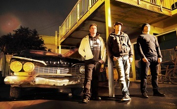

History
Salmonella Dub began in 1992, crafting their name from the "bad-taste" dub cover versions of songs they used. In '90s New Zealand, dub/roots/reggae freak-outs weren't entirely in vogue, so Salmonella Dub would use covers of The Orb's Little Fluffy Clouds and Public Enemy to win over skeptical audiences. In the early '90s, New Zealand's liquor licensing laws changed, allowing pubs and clubs to stay open late and revitalizing the country's live music scene. Members of the band then called Golf Course Alligators seized this opportunity and, in late 1992, Andrew Penman (guitar), Mark Tyler (bass), and Dave Deakins (drums) became Salmonella Dub. In the early days they lacked money for a sampler and used DIY solutions.